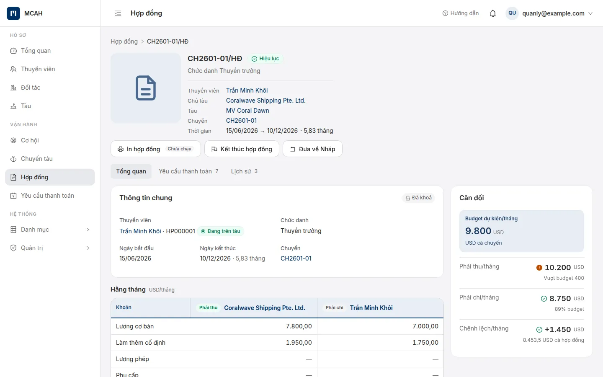

Hợp đồng và tiền
Hợp đồng
Soạn, gửi duyệt và duyệt hợp đồng thuyền viên.
Hợp đồng là thoả thuận tiền của một chuyến: ngày bắt đầu, ngày kết thúc, tiền phải thu từ chủ tàu và tiền phải trả thuyền viên. Mỗi chuyến có tối đa một hợp đồng. Chuyến tạo bằng tay không tự có hợp đồng; mở chuyến và bấm Tạo hợp đồng.

Soạn hợp đồng
- Khoản hằng tháng: lương cơ bản, làm thêm cố định, lương phép, phụ cấp, thưởng, phí dịch vụ, khác (hằng tháng).
- Khoản một lần: vé máy bay đi / về, phí visa, khám sức khoẻ, huấn luyện, thưởng hoàn thành hợp đồng, khác (một lần).
- Danh sách khoản là cố định, không thêm khoản tự đặt tên. Khoản lẻ ngoài danh sách nhập vào Khác và ghi rõ trong ghi chú hợp đồng. Yêu cầu thanh toán và bảng trả lương dùng đúng các khoản này; khoản không có hiện 0.
- Kỳ thanh toán của mỗi phía: ngày chốt sổ (5, 10, 15, 20, 25 hoặc cuối tháng), ngày trả, trả vào tháng sau 1, 2 hay 3 tháng, và gặp thứ Bảy, Chủ nhật thì làm trước hay sau.
Duyệt
Nháp→Chờ duyệt→Hiệu lực→Kết thúc
- Người soạn bấm Xin duyệt. Hợp đồng sang Chờ duyệt và khoá; rút lại được.
- Người duyệt bấm Duyệt (hợp đồng sang Hiệu lực) hoặc Từ chối kèm lý do.
- Lần duyệt đầu, app sinh đủ các yêu cầu thanh toán từ ngày bắt đầu tới ngày kết thúc.
Hợp đồng Hiệu lực không sửa được gì, kể cả ngày. Muốn đổi ngày hay tiền xem mục Rời tàu, sửa và kết thúc hợp đồng.
i
Chốt mà không có hợp đồng nháp?
Khi thuyền viên còn một hợp đồng khác chưa kết thúc, trùng thời gian. Hộp Chốt báo trước bằng khung vàng "Sẽ không tạo hợp đồng"; người đó vẫn được ghi lên tàu. Kết thúc hoặc rút ngắn hợp đồng cũ, rồi bấm Tạo hợp đồng trên trang chuyến. Ngay lúc chọn ứng viên, người còn hợp đồng đã có nhãn "Đang có hợp đồng …".
ViệcQuyền cần cóThường do
Tạo, sửa nháp, đưa về nhápHợp đồng · Tạo hợp đồng, Sửa hợp đồng nháp và đưa về nhápMôi giới
Xin duyệt, rút lạiHợp đồng · Gửi duyệt và rút lạiMôi giới
Duyệt, từ chốiHợp đồng · Duyệt và từ chốiDuyệt & quản lý
Kết thúc hợp đồngHợp đồng · Kết thúc hợp đồngDuyệt & quản lý